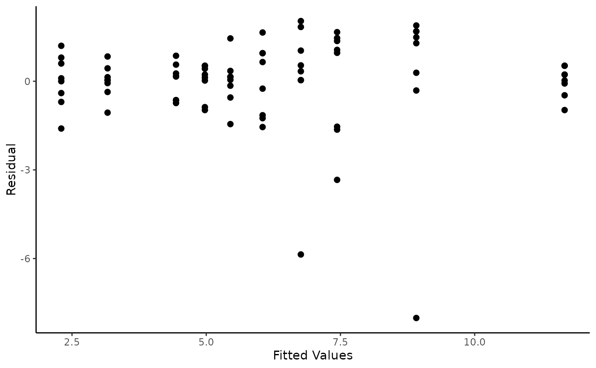

Data for Example 3.1 from Experimental Design and Analysis for Tree Improvement
Source:R/Exam3.1.R
Exam3.1.RdExam3.1 is part of data from Australian Centre for Agricultural Research (ACIAR) in Queensland, Australia (Experiment 309).
References
E.R. Williams, C.E. Harwood and A.C. Matheson (2023). Experimental Design and Analysis for Tree Improvement. CSIRO Publishing (https://www.publish.csiro.au/book/3145/).
Author
Muhammad Yaseen (myaseen208@gmail.com)
Sami Ullah (samiullahuos@gmail.com)
Examples
library(car)
library(dae)
library(dplyr)
library(emmeans)
library(ggplot2)
library(lmerTest)
library(magrittr)
library(predictmeans)
library(supernova)
data(DataExam3.1)
# Pg. 28
fmtab3.3 <-
lm(
formula = ht ~ repl*seedlot
, data = DataExam3.1
)
fmtab3.3ANOVA1 <-
anova(fmtab3.3) %>%
mutate(
"F value" =
c(
anova(fmtab3.3)[1:2, 3]/anova(fmtab3.3)[3, 3]
, anova(fmtab3.3)[3, 4]
, NA
)
)
# Pg. 33 (Table 3.3)
fmtab3.3ANOVA1 %>%
mutate(
"Pr(>F)" =
c(
NA
, pf(
q = fmtab3.3ANOVA1[2, 4]
, df1 = fmtab3.3ANOVA1[2, 1]
, df2 = fmtab3.3ANOVA1[3, 1], lower.tail = FALSE
)
, NA
, NA
)
)
#> Df Sum Sq Mean Sq F value Pr(>F)
#> repl 1 20.30 20.301 3.4197
#> seedlot 4 505.87 126.467 21.3035 0.005851 **
#> repl:seedlot 4 23.75 5.936 2.3663
#> Residuals 70 175.61 2.509
#> ---
#> Signif. codes: 0 ‘***’ 0.001 ‘**’ 0.01 ‘*’ 0.05 ‘.’ 0.1 ‘ ’ 1
# Pg. 33 (Table 3.3)
emmeans(object = fmtab3.3, specs = ~ seedlot)
#> NOTE: Results may be misleading due to involvement in interactions
#> seedlot emmean SE df lower.CL upper.CL
#> Acacia 10.29 0.396 70 9.50 11.08
#> Angophora 7.10 0.396 70 6.31 7.89
#> Casuarina 5.51 0.396 70 4.72 6.30
#> Melaleuca 4.94 0.396 70 4.15 5.73
#> Petalostigma 2.73 0.396 70 1.94 3.52
#>
#> Results are averaged over the levels of: repl
#> Confidence level used: 0.95
# Pg. 34 (Figure 3.2)
ggplot(
mapping = aes(
x = fitted.values(fmtab3.3)
, y = residuals(fmtab3.3)
)
) +
geom_point(size = 2) +
labs(
x = "Fitted Values"
, y = "Residual"
) +
theme_classic()

# Pg. 33 (Table 3.4)
DataExam3.1m <- DataExam3.1
DataExam3.1m[c(28, 51, 76), 5] <- NA
DataExam3.1m[c(28, 51, 76), 6] <- NA
fmtab3.4 <-
lm(
formula = ht ~ repl*seedlot
, data = DataExam3.1m
)
fmtab3.4ANOVA1 <-
anova(fmtab3.4) %>%
mutate(
"F value" =
c(
anova(fmtab3.4)[1:2, 3]/anova(fmtab3.4)[3, 3]
, anova(fmtab3.4)[3, 4]
, NA
)
)
# Pg. 33 (Table 3.4)
fmtab3.4ANOVA1 %>%
mutate(
"Pr(>F)" =
c(
NA
, pf(
q = fmtab3.4ANOVA1[2, 4]
, df1 = fmtab3.4ANOVA1[2, 1]
, df2 = fmtab3.4ANOVA1[3, 1], lower.tail = FALSE
)
, NA
, NA
)
)
#> Df Sum Sq Mean Sq F value Pr(>F)
#> repl 1 18.88 18.877 10.4201
#> seedlot 4 588.68 147.169 81.2367 0.00044 ***
#> repl:seedlot 4 7.25 1.812 2.4163
#> Residuals 67 50.23 0.750
#> ---
#> Signif. codes: 0 ‘***’ 0.001 ‘**’ 0.01 ‘*’ 0.05 ‘.’ 0.1 ‘ ’ 1
# Pg. 33 (Table 3.4)
emmeans(object = fmtab3.4, specs = ~ seedlot)
#> NOTE: Results may be misleading due to involvement in interactions
#> seedlot emmean SE df lower.CL upper.CL
#> Acacia 10.87 0.224 67 10.42 11.31
#> Angophora 7.76 0.231 67 7.30 8.22
#> Casuarina 5.51 0.216 67 5.08 5.94
#> Melaleuca 4.94 0.216 67 4.51 5.38
#> Petalostigma 2.73 0.216 67 2.30 3.16
#>
#> Results are averaged over the levels of: repl
#> Confidence level used: 0.95